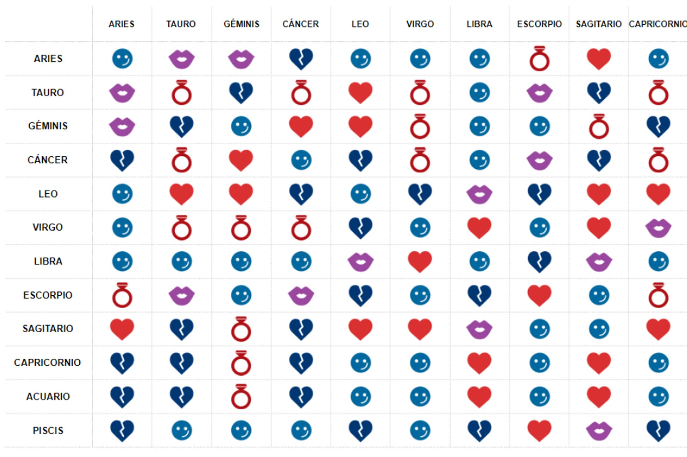

Astrología

Astrología
| Signo | Fechas | Astro | Elemento | China | |
|---|---|---|---|---|---|
| 21 de marzo – 20 de abril | Marte / Plutón | Fuego | Dragón | ||
| 21 de abril – 20 de mayo | Venus / Tierra | Tierra | Serpiente | ||
| Géminis | 21 de mayo – 24 de junio | Mercurio | Aire | Caballo | |
| Cáncer | 25 de junio – 22 de julio | Luna | Agua | Cabra | |
| Leo | 23 de julio – 23 de agosto | Sol | Fuego | Mono | |
| Virgo | 24 de agosto – 23 de septiembre | Mercurio | Tierra | Gallo | |
| Libra | 24 de septiembre – 22 de octubre | Venus | Aire | Pero | |
| Escorpio | 23 de octubre – 22 de noviembre | Plutón / Marte | Agua | Cerdo | |
| Sagitario | 22 de noviembre – 21 de diciembre | Júpiter | Fuego | Rata | |
| Capricornio | 22 de diciembre – 19 de enero | Saturno | Tierra | Buey | |
| Acuario | 20 de enero – 18 de febrero | Urano / Saturno | Aire | Tigre | |
| Piscis | 19 de febrero – 20 de marzo | Neptuno / Júpiter | Agua | Conejo |
Cada uno de estos signos representa una serie de cualidades y características asociadas a la personalidad de cada uno. El poder que tienen los astros o planetas sobre las personas es una creencia que tuvo una gran fuerza en las civilizaciones griega y romana, aunque es desde el Renacimiento cuando toma la forma que conocemos en nuestros días y no es sólo temas de buenas videntes. De esta manera, los doce signos del zodíaco se agrupan en cuatro tipos, cada uno asociado a un elemento: fuego, tierra, agua y aire. Aunque nosotros estamos acostumbrados a la tradición occidental, existen otras como la india o la china, que también toman el mismo número de signo aunque con otros nombres.
Compatibilidad de los signos
No existen los signos zodiacales incompatibles en la astrología, lo que significa que cualquier par de signos son más o menos compatibles. Dos personas, que tienen signos zodiacales muy compatibles van a encontrar muchas afinidades porque poseen la misma longitud de onda. Pero las personas cuyos signos zodiacales no son compatibles, necesitarán más paciencia y tacto para lograr una relación feliz y armoniosa.